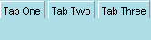

| Attributs | Enfants communs |
| align | <tab> |
| class | |
| id | |
| flex | |
| orient | |
| autostretch | |
| oncommand |
Comme l'élément parent <tabcontrol>, <tabbox> hérite directement du cadre, ainsi il peut également
utiliser tous les attributs de positionnement et de style définis pour cet élément. L'élément de tabbox est le
widget de cadre qui contient les tabulateurs réels. Ses enfants directs sont le plus souvent
des éléments <tab>:
Notez que le cadrage du tabbox est le plus souvent horizontal, bien que ça peut ne pas toujours être le cas.

Last updated: 3/27/00 Ian
Oeschger
French version (7/6/00) Matthieu Camus